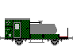
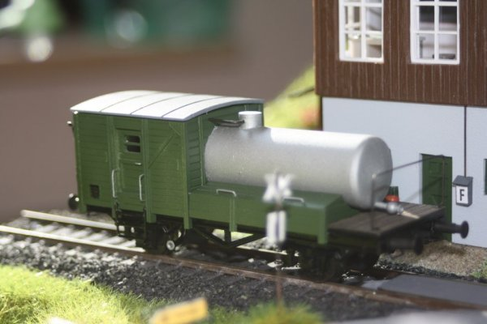

Krümelbahn
Krümelbahn
Fäkalienwagen117
Allgemeine Informationen
Auf dieses Fahrzeug aufmerksam geworden bin ich auf der Seite "Bw Rheinbrück" bei der Suche nach einem Vorsatzschneepflug für meine BR50. Tiefere Recherchen in Zeitschriften und zeigten mir die Notwendigkeit, für mein Bw ein solches Fahrzeug vorhalten zu müssen.
Literaturhinweise
In der Literatur sind Berichte über das Fäkalienwagen selten. Folgende Berichte in Zeitschriften sind mir z.Zt. bekannt:- Modelleisenbahner 11/1958 S.305: Fäkalienwagen
- Güterwagen Band 7 Kesselwagen für brennbare Flüssigkeiten (Seite 50f): Wagen für Jauche und Dünger
- Miba-Report Dienstfahrzeuge 2 (Seite 54f): Fäkalienwagen
- Eisenbahn-Journal 10/2002, S.23ff: Württembergische Latrinenwagen
- Eisenbahn-Journal 11/2002, S.30ff: Stinkendes Gold
- Eisenbahn-Journal 1/2003, S.34ff: Langlebige Diener
- Bahndienst- und Dienstgüterwagen, Band 1: Spezialwagen für jeden Zweck S.154ff: Fäkalienwagen
| Links |
Drehscheibe-Online Fäkalienwagen der Länderbahnen |
|---|
Industriemodelle/Bausätze
Einen Selbstbau gibt es hier:- Bw Rheinbrück (nach unten blättern...)
- Eisenbahn-Magazin 10/19 (Seite 110f.) Ein "Stinker" im Betriebswerk
Bauteilliste
Als Basiswagen habe ich den G10 (Roco 4301) verwendet.Weiterhin wird je nach Verfeinerungswunsch benötigt:
| Stückzahl | Benennung | Best.Nr. | Techn.Daten | Hinweis |
|---|---|---|---|---|
| 1 | Güterwagenzurüstsatz | Weinert 9254 | 2 Pufferbohlen, 4 Puffersockelplatten 2 Zettelkästen, 6 Umstellhebel |
Zettelkästen und Umstellhebel werden benötigt, wenn die am Rahmen angegossenen Teile entfernt wurden |
| 4 | Puffer | Weinert 8614 | (4er Pack) | |
| 2 | Hakenkupplung | Weinert 8648 | (2er Pack) | nicht bei Anbau einer Fahrzeugkupplung |
| 2 | Bremsschläuche, glatt | Weinert 8290 | (4er Pack) | nicht bei Anbau einer Fahrzeugkupplung |
| 4 | Rangiertritte | Weinert 8690 | (4er Pack) | |
| 2 | Signalscheibenhalter, gekröpft | Weinert 82622 | (8er Pack) | |
| 1 | Wagenboden Universal 200x30 | Joswood Moe24001 | ||
| 1 | Spritzenkanüle Ø~17mm | für den Tank | ||
| 1 | Profilsatz | Bavaria-Modellbahnen 15.59 | enthält diverse Profile für Güterwagenwände | |
| Messingprofil | Rund: 0,4mm, 1mm | |||
| Messingprofil | Rohr: Ø 1,5mm | Abflussrohr zu beiden Seiten des Fahrzeugs Auslassstutzen am unteren Tankende |
||
| Kunststoffprofil | Rechteck-Profil: 1,5*1,5mm, 2mm*0,5mm | |||
| Kunststoffplatte | 0,5mm | |||
| Beschriftung | DB Wuppertal 3001 Fäkalienwagen117 |
Eigenentwurf, Bezug durch Andreas Nothaft |
Baubeschreibung

Fäkalienwagen
in Betrieb seit: 10.2014
Lackierung
| Farbe | Best.Nr. | Techn.Daten |
|---|---|---|
| Grundierung | Weinert 2698 | |
| Fahrgestell | Weinert 2646 | RAL 9005, schwarz |
| Gehäuse | Weinert 2629 | RAL 6020, chromoxidgrün |
| Dach | Weinert 2633 | RAL 7011, eisengrau |
| Tank | Weinert 2647 | RAL 9006, weißaluminium |